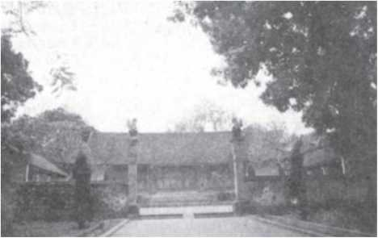

hùng Hưng quê ở Đường Lâm. Đất quê ông nay thuộc huyện Ba Vì, Hà Nội. Phùng Hưng sinh năm nào chưa rõ, chỉ biết ông mất vì bệnh vào năm Kỉ Tị (789). Sinh thời, Phùng Hưng là người mạnh khỏe và dũng lược. Chính ông đã phát động và lãnh đạo một cuộc khởi nghĩa rất lớn, đập tan chính quyền đô hộ của nhà Đường, xây dựng nền độc lập tự chủ trong một thời gian khá dài. Trong Việt điện u linh tập, Lý Tế Xuyên đã dựa vào ghi chép của Triệu Vương Giao Châu kí mà chép chuyện về Phùng Hưng như sau:
“Vương họ Phùng, húy là Hưng, ông và cha của Vương đều nối đời làm Tù Trưởng của đất Đường Lâm. Chức Tù Trưởng bấy giờ gọi là Quan Lang. Tục gọi như thế, hiện nay ở mạn ngược vẫn còn. Vương con nhà giàu nhưng hay giúp đỡ kẻ nghèo, đã thế, Vương lại khỏe mạnh, có thể đánh được hổ, vật được trâu. Em Vương là (Phùng) Hãi cũng có sức mang nổi ngàn cân, cõng được thuyền chứa ngàn hộc mà đi luôn mười dặm. Gần xa nghe tiếng đều lấy làm sợ. Thời niên hiệu Đại Lịch của nhà Đường, nước ta rối loạn, Vương cùng em đem binh đi chinh phục khắp các vùng ở lân cận. vương đổi tên là Cự Lão và xưng là Đô Quân, còn em Vương thì đổi tên là Cự Lực và xưng là Đô Bảo, anh em cùng nhau làm theo kế sách của một người cùng làng, tên là Đỗ Anh Luân, đem đại binh đi tuần thú khắp các châu Đường Lâm và Trường Phong, uy danh lừng lẫy, khiến ai cũng phải theo phục. Vương cho phao tin rằng sẽ đánh phủ đô hộ. Quan đô hộ của nhà Đường là Cao Chính Bình đem quân đi đánh, bị thua, sợ quá phát bệnh mà chết, vương vào phủ đô hộ, nắm quyền trị dân được bảy năm thì mất.
Bấy giờ, nhiều người muốn lập em của Vương là Phùng Hãi lên thay, nhưng quan Đầu Mục có sức khỏe lạ thường là Bồ Phá Cần lại quyết chí không cho, bắt phải lập con Vương là Phùng An. Phùng An lên nối ngôi, bèn đem quân đánh Phùng Hãi. Phùng Hãi sợ Bồ Phá Cần nên lánh vào động Chu Nham, sau không biết là đi về đâu.
Phùng An tôn Vương làm Bố Cái Đại vương. Tức nước ta gọi cha là bố, gọi mẹ là cái nên Phùng An mới tôn vương làm Bố Cái Đại Vương như vậy. Hai năm sau đó, vua Đường Đức Tông sai Triệu Xương sang làm đô hộ nước ta. Triệu Xương tới nơi, trước hết, cho sứ giả mang lễ vật đến dụ dỗ Phùng An. Phùng An xin hàng phục. Từ đó, họ Phùng tản mác mỗi người một nơi.
Sau khi mất, Bố Cái Đại Vương rất hiển linh. Dân các làng thường nghe có tiếng ngựa xe đi lại ầm ầm trên nóc nhà hoặc trên ngọn cây cao, ngẩng trông thì thấy ẩn hiện trong những đám mây là cờ ngũ sắc và kiệu vàng rực rỡ, lại có cả tiếng nhạc văng vẳng nữa.
Bấy giờ, nếu có việc lành hay dữ sắp xẩy ra thì thế nào đêm đến cũng sẽ có dị nhân báo cho các vị hào trưởng biết để thông tin cho cả làng hay, cho nên, ai cũng lấy làm lạ, bèn cùng nhau lập đền thờ Vương ở phía tây của phủ đô hộ. Đền thờ vương rất linh thiêng, mọi việc cầu mưa, cầu tạnh đều được linh ứng. Ai gặp việc khó khăn như bị kẻ xấu lấy trộm hoặc giả là muốn cầu tài, đến lễ thần đều được như ý. Bởi vậy, người đến lễ rất đông, khói hương chẳng lúc nào dứt.
Khi Ngô Tiên Chủ (chỉ Ngô Quyền - NKT) dựng nước, bọn giặc Nam Hán sang cướp nước ta. Ngô Tiên Chủ ngày đêm lo nghĩ tìm cách chống đánh. Thế rồi một đêm, Ngô Tiên Chủ nằm mơ, thấy có một cụ già áo mũ chỉnh tề, đến nói rõ họ tên của mình và bảo rằng:
- Tôi đã trù tính, sáp sẵn các đội thần binh để giúp sức Nhà vua, xin Nhà vua hãy gấp tiến binh, đừng lo nghĩ gì cả.
Đến khi Ngô Tiên Chủ ra đánh giặc ở sông Bạch Đằng, nghe trên không có tiếng binh mã ầm ầm, và quả nhiên trận ấy được đại thắng. Ngô Tiên Chủ lấy làm lạ, liền sai sửa sang ngôi đền, khiến cho đền rộng rãi và lịch sự hơn xưa. Xong, Ngô Tiên Chủ thân đem các thứ lễ vật cùng cờ quạt chiêng trống đến để tế lễ. Sau, các triều quen dần thành lệ. Thời Trần, vào năm Trùng Hưng thứ nhất (1285), Nhà vua sắc phong là Phù Hựu Đại vương. Năm Trùng Hưng thứ tư lại gia phong thêm hai chữ Chương Tín. Năm Hưng Long thứ 20 (tức năm 1312 - NKT) vua (Trần Anh Tông) gia phong thêm hai chữ Sùng Nghĩa nữa. Đến nay, sự linh thiêng vẫn được sùng phụng như xưa”.

Lời bàn:
Một nhà, anh em, cha con cùng dốc chí dựng nền tự chủ nhưng rốt cuộc, người có tên tuổi bất diệt với ngàn đời thì chỉ là Bố Cái Đại Vương Phùng Hưng mà thôi. Phùng Hãi có gan đi theo kẻ mạnh để chống kẻ mạnh mà chưa có gan tự mình chống lại kẻ mạnh. Bóng ông mờ nhạt trong sử sách, ấy cũng là lẽ tự nhiên.
Bố Phá Cần xử sự quả là xa lạ với lẽ thường. Gạt Phùng Hãi đã có chút từng trải để đưa Phùng An còn non nớt lên thay, bản tâm của Bố Phá Cần phải chăng là mong mỏi kẻ ở ngôi cao phải yếu kém để mình dễ bề thao túng? Việc làm ấy, nếp nghĩ ấy, lợi cho riêng mình một đời nhưng lại hại cho xã tắc một thuở, giận thay!
Phùng An cùng Bố Phá cần đi đánh Phùng Hãi, cái thu được chẳng đủ bù cho cái mất đi, mà cái mất đi nào phải chỉ có con người và của cải? Xót xa hơn cả vẫn là thế nước mà cha đã dựng lên, là đạo lí mà tổ tiên để lại, mất hai thứ đó cũng có nghĩa là mất tất cả đó thôi.
Hẳn nhiên, không ai quyết rằng Ngô Quyền thắng trận Bạch Đằng là nhờ oai linh của Bố Cái Đại vương giúp sức, nhưng, Ngô Quyền cũng như bao vị dũng tướng ngàn xưa ra trận, vẫn luôn tin rằng thần linh sông núi luôn luôn sát cánh với mình, và ai dám bảo rằng, niềm tin ấy không phải là một phần rất quan trọng của sức mạnh?
Phùng Hưng, sinh vi tướng, tử vi thần, dẫu bạn hoàn toàn là người vô thần, cũng xin bạn hãy thành kính thắp nén hương để tưởng nhớ, bởi vì chính nhờ có những con người phi thường ấy, chính nhờ niềm tin vào linh khí của những con người ấy, bạn mới có thể thanh thản mà nói một cách tự nhiên rằng: ta là người vô thần.